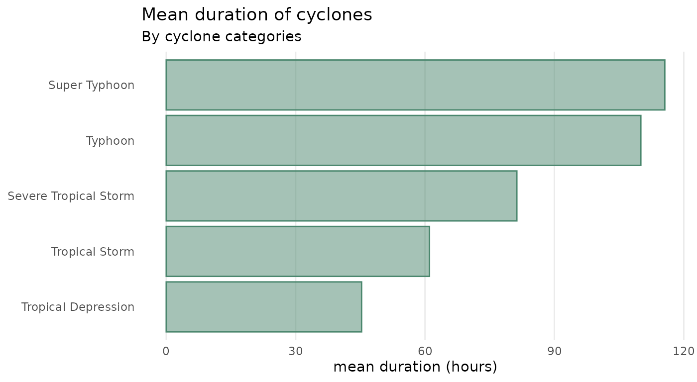
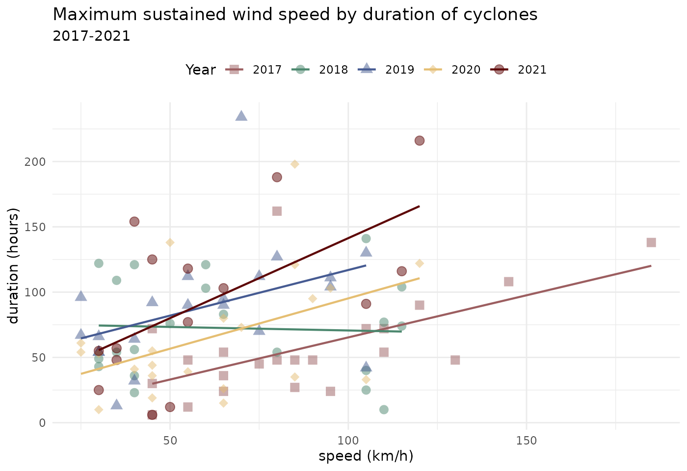

Data wrangling
Following are some examples of how the bagyo dataset can
be used to demonstrate various data wrangling approaches, particularly
those using the tidyverse packages.
Creating summaries
## Get number of cyclone categories per year ----
bagyo |>
group_by(year, category_name) |>
count() |>
group_by(year) |>
complete(category_name) |>
ungroup()
#> # A tibble: 20 × 3
#> year category_name n
#> <dbl> <fct> <int>
#> 1 2017 Tropical Depression 5
#> 2 2017 Tropical Storm 9
#> 3 2017 Severe Tropical Storm 5
#> 4 2017 Typhoon 3
#> 5 2017 Super Typhoon NA
#> 6 2018 Tropical Depression 4
#> 7 2018 Tropical Storm 7
#> 8 2018 Severe Tropical Storm 4
#> 9 2018 Typhoon 6
#> 10 2018 Super Typhoon NA
#> 11 2019 Tropical Depression 8
#> 12 2019 Tropical Storm 2
#> 13 2019 Severe Tropical Storm 3
#> 14 2019 Typhoon 8
#> 15 2019 Super Typhoon NA
#> 16 2020 Tropical Depression 6
#> 17 2020 Tropical Storm 7
#> 18 2020 Severe Tropical Storm 3
#> 19 2020 Typhoon 4
#> 20 2020 Super Typhoon 2
## Get yearly mean cyclone pressure and speed ----
bagyo |>
group_by(year) |>
summarise(mean_pressure = mean(pressure), mean_speed = mean(speed))
#> # A tibble: 4 × 3
#> year mean_pressure mean_speed
#> <dbl> <dbl> <dbl>
#> 1 2017 986. 88.0
#> 2 2018 961. 66.7
#> 3 2019 976. 59.0
#> 4 2020 973. 62.0
## Get cyclone category mean pressure and speed ----
bagyo |>
group_by(category_name) |>
summarise(
n = n(),
mean_pressure = mean(pressure),
mean_speed = mean(speed)
)
#> # A tibble: 5 × 4
#> category_name n mean_pressure mean_speed
#> <fct> <int> <dbl> <dbl>
#> 1 Tropical Depression 23 996. 39.8
#> 2 Tropical Storm 25 986. 61.6
#> 3 Severe Tropical Storm 15 978. 75
#> 4 Typhoon 21 941. 102.
#> 5 Super Typhoon 2 908. 112.Working with date and time data
## Get cyclone category mean duration (in hours) ----
bagyo |>
mutate(duration = end - start) |>
group_by(category_name) |>
summarise(mean_duration = mean(duration))
#> # A tibble: 5 × 2
#> category_name mean_duration
#> <fct> <drtn>
#> 1 Tropical Depression 46.69565 hours
#> 2 Tropical Storm 57.48000 hours
#> 3 Severe Tropical Storm 79.13333 hours
#> 4 Typhoon 106.66667 hours
#> 5 Super Typhoon 77.50000 hours
## Get number of cyclones per month by year ----
bagyo |>
mutate(month = month(start, label = TRUE)) |>
group_by(month, year) |>
count() |>
ungroup() |>
complete(month, year, fill = list(n = 0)) |>
arrange(year, month)
#> # A tibble: 48 × 3
#> month year n
#> <ord> <dbl> <int>
#> 1 Jan 2017 1
#> 2 Feb 2017 1
#> 3 Mar 2017 0
#> 4 Apr 2017 2
#> 5 May 2017 0
#> 6 Jun 2017 0
#> 7 Jul 2017 4
#> 8 Aug 2017 2
#> 9 Sep 2017 4
#> 10 Oct 2017 3
#> # ℹ 38 more rowsData visualisation
Following are some examples of how the bagyo dataset can
be used to demonstrate various data visualisation approaches,
particularly those using the tidyverse and
ggplot2 packages.
Bar plots
## Get cyclone category mean duration (in hours) ----
bagyo |>
mutate(duration = end - start) |>
group_by(category_name) |>
summarise(mean_duration = mean(duration)) |>
ggplot(mapping = aes(x = mean_duration, y = category_name)) +
geom_col(colour = "#4b876e", fill = "#4b876e", alpha = 0.5) +
labs(
title = "Mean duration of cyclones",
subtitle = "By cyclone categories",
x = "mean duration (hours)",
y = NULL
) +
theme_minimal() +
theme(
panel.grid.minor.x = element_blank(),
panel.grid.major.y = element_blank(),
panel.grid.minor.y = element_blank()
)
Scatter plots
## Cyclone speed by presssure ----
bagyo |>
dplyr::mutate(year = factor(year)) |>
ggplot(mapping = aes(x = speed, y = pressure)) +
geom_point(mapping = aes(colour = category_name), size = 3, alpha = 0.5) +
scale_colour_manual(
name = NULL,
values = c("#9c5e60", "#4b876e", "#465b92", "#e5be72", "#5d0505")
) +
labs(
title = "Cyclone maximum sustained wind speed and maximum central pressure",
subtitle = "By cyclone categories and year",
x = "wind speed (km/h)",
y = "central pressure (hPa)"
) +
facet_wrap(. ~ year, ncol = 4) +
theme_bw() +
theme(
legend.position = "top",
strip.background = element_rect(
fill = alpha("#465b92", 0.7), colour = "#465b92"
),
panel.border = element_rect(colour = "#465b92"),
panel.grid.minor = element_blank()
)
bagyo |>
mutate(
year = factor(year),
duration = as.numeric(end - start)
) |>
ggplot(mapping = aes(x = speed, y = duration)) +
geom_point(
mapping = aes(colour = year, shape = year), size = 3, alpha = 0.5
) +
geom_smooth(
mapping = aes(colour = year), method = "lm", se = FALSE, linewidth = 0.75
) +
scale_colour_manual(
values = c("#9c5e60", "#4b876e", "#465b92", "#e5be72")
) +
scale_shape_manual(values = 15:18) +
labs(
title = "Maximum sustained wind speed by duration of cyclones",
subtitle = "2017-2020",
x = "speed (km/h)", y = "duration (hours)",
colour = "Year", shape = "Year"
) +
theme_minimal() +
theme(legend.position = "top")
Time series
## Get number of cyclones per month by year and plot ----
bagyo |>
mutate(month = month(start, label = TRUE)) |>
group_by(month, year) |>
count() |>
ungroup() |>
complete(month, year, fill = list(n = 0)) |>
arrange(year, month) |>
ggplot(mapping = aes(x = month, y = n)) +
geom_col(colour = "#4b876e", fill = "#4b876e", alpha = 0.5) +
scale_y_continuous(breaks = seq(from = 0, to = 6, by = 1)) +
labs(
title = "Number of cyclones over time",
subtitle = "2017-2020",
x = NULL,
y = "n"
) +
facet_wrap(. ~ year, ncol = 4) +
theme_bw() +
theme(
strip.background = element_rect(
fill = alpha("#465b92", 0.7), colour = "#465b92"
),
panel.border = element_rect(colour = "#465b92"),
panel.grid.minor.y = element_blank(),
panel.grid.major.x = element_blank(),
axis.text.x = element_text(size = 10, angle = 90, hjust = 1, vjust = 0.5)
)Distribution plots
bagyo |>
mutate(year = factor(year)) |>
ggplot(mapping = aes(x = year, y = speed)) +
geom_boxplot(colour = "#4b876e", fill = "#4b876e", alpha = 0.5) +
labs(
title = "Distribution of tropical cyclone maximum sustained wind speed",
subtitle = "2017-2022",
x = NULL, y = "speed (km/h)"
) +
theme_minimal() +
theme(panel.grid.major.x = element_blank())
bagyo |>
mutate(year = factor(year)) |>
ggplot(mapping = aes(x = year, y = speed)) +
geom_boxplot(colour = "#4b876e") +
geom_jitter(
colour = "#4b876e", fill = "#4b876e", alpha = 0.5,
shape = 21, size = 2, width = 0.2
) +
labs(
title = "Distribution of tropical cyclone maximum sustained wind speed",
subtitle = "2017-2022",
x = NULL, y = "speed (km/h)"
) +
theme_minimal() +
theme(panel.grid.major.x = element_blank())
bagyo |>
mutate(year = factor(year)) |>
ggplot(mapping = aes(x = year, y = speed)) +
geom_violin(colour = "#4b876e", fill = "#4b876e", alpha = 0.5) +
geom_jitter(colour = "#4b876e", size = 3, width = 0.2) +
labs(
title = "Distribution of tropical cyclone maximum sustained wind speed",
subtitle = "2017-2022",
x = NULL, y = "speed (km/h)"
) +
theme_minimal() +
theme(panel.grid.major.x = element_blank())